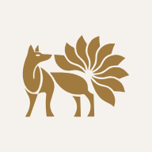

เชื่อมแอปร้านกับกิตฮับ
กำลังดูว่าเชื่อมแล้วหรือยัง…
หน้านี้คุยกับกิตฮับให้แอปร้านเท่านั้น ไม่มีข้อมูลพนักงาน และไม่ต้องใส่รหัส

กำลังดูว่าเชื่อมแล้วหรือยัง…
หน้านี้คุยกับกิตฮับให้แอปร้านเท่านั้น ไม่มีข้อมูลพนักงาน และไม่ต้องใส่รหัส